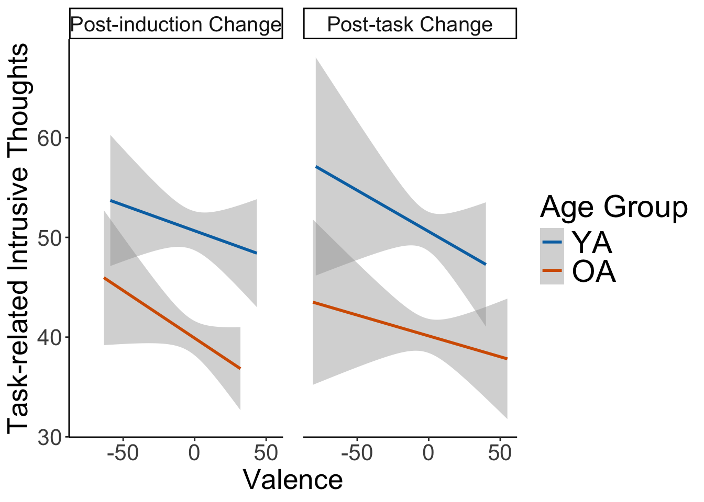

Code
rm(list= ls())
source("R/0.get_packages.R")Script of the analyses “Intrusive Thoughts Mediate the Links Between Affective Valence and Prospective Memory”
rm(list= ls())
source("R/0.get_packages.R")# change some parameters for plotting
params<-
theme(
plot.title = element_text(size = 25),
axis.title.x = element_text(size = 20),
axis.title.y = element_text(size = 20),
axis.text=element_text(size=16),
legend.text=element_text(size=rel(2)),
legend.title = element_text(size=rel(2)),
strip.text.x = element_text(size=15)
)
# use colour-blind friendly palette
okabe_ito <- c("YA" = "#0072B2", # blue
"OA" = "#D55E00") # vermillion
# use the labeller
lab_valence <- ggplot2::as_labeller(c(
post_induction = "Post-induction Change",
post_task = "Post-task Change"
))Five participants who did not belong to the age range of both YA and OA were excluded
#------------------------------------------------------------------------------#
# Import datasets and exclude participants
#------------------------------------------------------------------------------#
# import the spss dataset
df_wide<-read.csv("group_data/df_wide.csv")
# get the spss file
spss_data<-read.csv("PM final data.csv" )
#------------------------------------------------------------------------------#
#------------------------------------------------------------------------------#
# create age variable
df_wide$agegroup<-ifelse(df_wide$agegroup==1, "YA", "OA")
#df_long$agegroup<-ifelse(df_long$agegroup==1, "YA", "OA")
spss_data$AgeGroup<-ifelse(spss_data$AgeGroup==1, "YA", "OA")
single_part<- df_wide %>%
group_by(participant) %>%
slice(1)
print(paste("Total number of participants is", nrow(single_part)))[1] "Total number of participants is 125"# plot the distribution of age as a function of agegroup
spss_data$AgeGroup<-factor(spss_data$AgeGroup, levels = c("YA", "OA"))
# exclude participants who do not belong to the classical age range
age_excl<-spss_data$Nb[(spss_data$Age>35 & spss_data$AgeGroup=="YA") |
(spss_data$Age<60 & spss_data$AgeGroup=="OA") ]
# exclude those participants
spss_data<-spss_data[!spss_data$Nb %in% age_excl,]
df_wide<-df_wide[!df_wide$participant %in% age_excl,]
single_part<-single_part[!single_part$participant %in% age_excl,]
#df_long<-df_long[!df_long$participant %in% age_excl,]
age_plot<-ggplot(spss_data, aes(x = Age))+
geom_histogram()+
facet_wrap(.~AgeGroup)+
theme_classic()
print(age_plot)`stat_bin()` using `bins = 30`. Pick better value with `binwidth`.Warning: Removed 2 rows containing non-finite outside the scale range
(`stat_bin()`).
# check the number of participants
kable(df_wide %>%
group_by(participant) %>%
slice(1) %>%
group_by( agegroup)%>%
tally())| agegroup | n |
|---|---|
| OA | 58 |
| YA | 62 |
#--------------------First, apply exclusion for participants who do not belong to the age range and get demographics
source("R/2.sociodemographics.R")
Table: Sociodemographics
|agegroup | Age| Age_sd| max_Age| min_age| Crystallized_intelligence_mean| Crystallized_intelligence_sd| Processing_speed_mean| Processing_speed_sd| Health| Health_df| Years_education| Years_education_sd| General_intrusive_thoughts| General_intrusive_thoughts_sd| Task_related_intrusive_thoughts| Task_related_intrusive_thoughts_sd|
|:--------|--------:|--------:|-------:|-------:|------------------------------:|----------------------------:|---------------------:|-------------------:|--------:|---------:|---------------:|------------------:|--------------------------:|-----------------------------:|-------------------------------:|----------------------------------:|
|OA | 71.98214| 5.505340| 84| 61| 23.03571| 3.751190| 49.80357| 10.56481| 4.089286| 0.6948325| 15.32143| 3.427733| 66.01818| 10.12970| 42.28571| 10.18147|
|YA | 22.08065| 3.600084| 34| 17| 15.17742| 2.961635| 58.22581| 12.15800| 3.934426| 0.8730951| 13.57895| 5.014078| 81.47541| 12.95583| 54.44262| 13.39717|kable(gender_part, caption = "Gender by Agegroup")| agegroup | gender | n |
|---|---|---|
| OA | 1 | 29 |
| OA | 2 | 27 |
| OA | NA | 2 |
| YA | 1 | 21 |
| YA | 2 | 41 |
kable(part_demo, caption = "Sociodemographics")| agegroup | Age | Age_sd | max_Age | min_age | Crystallized_intelligence_mean | Crystallized_intelligence_sd | Processing_speed_mean | Processing_speed_sd | Health | Health_df | Years_education | Years_education_sd | General_intrusive_thoughts | General_intrusive_thoughts_sd | Task_related_intrusive_thoughts | Task_related_intrusive_thoughts_sd |
|---|---|---|---|---|---|---|---|---|---|---|---|---|---|---|---|---|
| OA | 71.98214 | 5.505340 | 84 | 61 | 23.03571 | 3.751190 | 49.80357 | 10.56481 | 4.089286 | 0.6948325 | 15.32143 | 3.427733 | 66.01818 | 10.12970 | 42.28571 | 10.18147 |
| YA | 22.08065 | 3.600084 | 34 | 17 | 15.17742 | 2.961635 | 58.22581 | 12.15800 | 3.934426 | 0.8730951 | 13.57895 | 5.014078 | 81.47541 | 12.95583 | 54.44262 | 13.39717 |
Compare the sociodemographics between young and old
source("R/3.compare_sociodemo.R")
summary(mod_health)
Call:
lm(formula = health ~ agegroup, data = single_part)
Residuals:
Min 1Q Median 3Q Max
-2.93443 -0.08929 0.06557 0.91071 1.06557
Coefficients:
Estimate Std. Error t value Pr(>|t|)
(Intercept) 4.0893 0.1059 38.596 <2e-16 ***
agegroupYA -0.1549 0.1467 -1.055 0.293
---
Signif. codes: 0 '***' 0.001 '**' 0.01 '*' 0.05 '.' 0.1 ' ' 1
Residual standard error: 0.7929 on 115 degrees of freedom
(3 observations deleted due to missingness)
Multiple R-squared: 0.009593, Adjusted R-squared: 0.0009803
F-statistic: 1.114 on 1 and 115 DF, p-value: 0.2935summary(mod_educat)
Call:
lm(formula = education_y ~ agegroup, data = single_part)
Residuals:
Min 1Q Median 3Q Max
-12.5789 -1.5789 0.6786 2.4211 8.6786
Coefficients:
Estimate Std. Error t value Pr(>|t|)
(Intercept) 15.3214 0.5749 26.653 <2e-16 ***
agegroupYA -1.7425 0.8094 -2.153 0.0335 *
---
Signif. codes: 0 '***' 0.001 '**' 0.01 '*' 0.05 '.' 0.1 ' ' 1
Residual standard error: 4.302 on 111 degrees of freedom
(7 observations deleted due to missingness)
Multiple R-squared: 0.04008, Adjusted R-squared: 0.03143
F-statistic: 4.635 on 1 and 111 DF, p-value: 0.0335summary(mill_hill)
Call:
lm(formula = Mill_Hill ~ agegroup, data = single_part)
Residuals:
Min 1Q Median 3Q Max
-8.0357 -2.1774 -0.1774 2.6080 8.8226
Coefficients:
Estimate Std. Error t value Pr(>|t|)
(Intercept) 23.0357 0.4489 51.32 <2e-16 ***
agegroupYA -7.8583 0.6193 -12.69 <2e-16 ***
---
Signif. codes: 0 '***' 0.001 '**' 0.01 '*' 0.05 '.' 0.1 ' ' 1
Residual standard error: 3.359 on 116 degrees of freedom
(2 observations deleted due to missingness)
Multiple R-squared: 0.5813, Adjusted R-squared: 0.5776
F-statistic: 161 on 1 and 116 DF, p-value: < 2.2e-16summary(digit_symbol)
Call:
lm(formula = DS ~ agegroup, data = single_part)
Residuals:
Min 1Q Median 3Q Max
-27.804 -7.226 -0.726 6.196 34.774
Coefficients:
Estimate Std. Error t value Pr(>|t|)
(Intercept) 49.804 1.527 32.606 < 2e-16 ***
agegroupYA 8.422 2.107 3.997 0.000113 ***
---
Signif. codes: 0 '***' 0.001 '**' 0.01 '*' 0.05 '.' 0.1 ' ' 1
Residual standard error: 11.43 on 116 degrees of freedom
(2 observations deleted due to missingness)
Multiple R-squared: 0.121, Adjusted R-squared: 0.1135
F-statistic: 15.97 on 1 and 116 DF, p-value: 0.0001132# create a contingency table to check whther the distribution of gender is equal
contingency_table_gender<-table(single_part[, c("agegroup", "gender")])
chi_square_test <- chisq.test(contingency_table_gender)
chi_square_test
Pearson's Chi-squared test with Yates' continuity correction
data: contingency_table_gender
X-squared = 3.1684, df = 1, p-value = 0.07508Valence reshaped
# now call the script to the reshape the valence
source("R/4.valence_reshape.R")
# participant check
# check the number of participants
kable(long_df_valence %>%
group_by(participant) %>%
slice(1) %>%
group_by( agegroup)%>%
tally())| agegroup | n |
|---|---|
| OA | 58 |
| YA | 62 |
kable(long_df_valence_diff %>%
group_by(participant) %>%
slice(1) %>%
group_by( agegroup)%>%
tally())| agegroup | n |
|---|---|
| OA | 58 |
| YA | 62 |
Preprocessing of valence. Derivation of post-induction and post valence measures and visualization
source("R/5.valence_preproc.R")Warning: Using the `size` aesthetic with geom_polygon was deprecated in ggplot2 3.4.0.
ℹ Please use the `linewidth` aesthetic instead.


Attaching package: 'tidyr'The following object is masked from 'package:reshape2':
smithsThe following objects are masked from 'package:Matrix':
expand, pack, unpack
source("R/6.valence_analysis.R")boundary (singular) fit: see help('isSingular')NOTE: Results may be misleading due to involvement in interactionsWarning: No shared levels found between `names(values)` of the manual scale and the
data's fill values.
No shared levels found between `names(values)` of the manual scale and the
data's fill values.
source("helper_functions/logit_transform.R")
source("R/7.PM_main_analysis.R")Type III Analysis of Variance Table with Satterthwaite's method
Sum Sq Mean Sq NumDF DenDF F value
aft_PM_minus_after_ind.s 7.1675 7.1675 1 337.22 9.4036
agegroup.c 5.0883 5.0883 1 112.46 6.6758
valence_aftIND_min_bef.s 5.8929 5.8929 1 314.49 7.7314
aft_PM_minus_after_ind.s:agegroup.c 0.2542 0.2542 1 337.22 0.3336
agegroup.c:valence_aftIND_min_bef.s 0.0187 0.0187 1 314.49 0.0245
Pr(>F)
aft_PM_minus_after_ind.s 0.002341 **
agegroup.c 0.011055 *
valence_aftIND_min_bef.s 0.005754 **
aft_PM_minus_after_ind.s:agegroup.c 0.563957
agegroup.c:valence_aftIND_min_bef.s 0.875773
---
Signif. codes: 0 '***' 0.001 '**' 0.01 '*' 0.05 '.' 0.1 ' ' 1
# Effect Size for ANOVA (Type III)
Parameter | Eta2 (partial) | 95% CI
-------------------------------------------------------------------
aft_PM_minus_after_ind.s | 0.03 | [0.00, 0.07]
agegroup.c | 0.06 | [0.00, 0.16]
valence_aftIND_min_bef.s | 0.02 | [0.00, 0.07]
aft_PM_minus_after_ind.s:agegroup.c | 9.88e-04 | [0.00, 0.02]
agegroup.c:valence_aftIND_min_bef.s | 7.78e-05 | [0.00, 0.01]
Linear mixed model fit by REML. t-tests use Satterthwaite's method [
lmerModLmerTest]
Formula: PM_task_lenient_av_log ~ aft_PM_minus_after_ind.s * agegroup.c +
valence_aftIND_min_bef.s * agegroup.c + (1 | participant)
Data: long_df_merged[(is.na(long_df_merged$MOCA) | long_df_merged$MOCA >=
26), ]
REML criterion at convergence: 1001.5
Scaled residuals:
Min 1Q Median 3Q Max
-2.5841 -0.4528 0.1433 0.6463 1.8714
Random effects:
Groups Name Variance Std.Dev.
participant (Intercept) 0.3284 0.5731
Residual 0.7622 0.8730
Number of obs: 348, groups: participant, 117
Fixed effects:
Estimate Std. Error df t value
(Intercept) 0.53032 0.07093 112.46241 7.477
aft_PM_minus_after_ind.s 0.21641 0.07057 337.21911 3.067
agegroup.c -0.36653 0.14186 112.46241 -2.584
valence_aftIND_min_bef.s 0.18991 0.06830 314.49377 2.781
aft_PM_minus_after_ind.s:agegroup.c -0.08152 0.14114 337.21911 -0.578
agegroup.c:valence_aftIND_min_bef.s 0.02137 0.13660 314.49377 0.156
Pr(>|t|)
(Intercept) 1.79e-11 ***
aft_PM_minus_after_ind.s 0.00234 **
agegroup.c 0.01105 *
valence_aftIND_min_bef.s 0.00575 **
aft_PM_minus_after_ind.s:agegroup.c 0.56396
agegroup.c:valence_aftIND_min_bef.s 0.87577
---
Signif. codes: 0 '***' 0.001 '**' 0.01 '*' 0.05 '.' 0.1 ' ' 1
Correlation of Fixed Effects:
(Intr) af_PM___. aggrp. v_IND_ a_PM___.:
aft_PM_m__. 0.002
agegroup.c 0.065 -0.001
vlnc_IND__. -0.005 0.651 0.016
af_PM___.:. -0.001 -0.231 0.002 -0.037
ag.:_IND__. 0.016 -0.037 -0.005 0.179 0.651 Warning: Using `size` aesthetic for lines was deprecated in ggplot2 3.4.0.
ℹ Please use `linewidth` instead.
Linear mixed model fit by REML. t-tests use Satterthwaite's method [
lmerModLmerTest]
Formula:
PM_task_lenient_av_log ~ post_ind_pos_spline.s + post_ind_neg_spline.s +
+agegroup.c + post_PM_pos_spline.s + post_PM_neg_spline.s +
(1 | participant)
Data: long_df_merged[(is.na(long_df_merged$MOCA) | long_df_merged$MOCA >=
26), ]
Control: lmerControl(optimizer = "bobyqa", optCtrl = list(maxfun = 1e+05))
REML criterion at convergence: 1003.2
Scaled residuals:
Min 1Q Median 3Q Max
-2.6423 -0.4712 0.1427 0.6297 1.9224
Random effects:
Groups Name Variance Std.Dev.
participant (Intercept) 0.3350 0.5788
Residual 0.7564 0.8697
Number of obs: 348, groups: participant, 117
Fixed effects:
Estimate Std. Error df t value Pr(>|t|)
(Intercept) 0.52820 0.07120 111.70337 7.419 2.47e-11 ***
post_ind_pos_spline.s 0.01537 0.06333 311.03673 0.243 0.80841
post_ind_neg_spline.s 0.20575 0.07530 302.14412 2.732 0.00666 **
agegroup.c -0.39247 0.14406 115.85951 -2.724 0.00744 **
post_PM_pos_spline.s 0.16251 0.07491 305.80703 2.169 0.03083 *
post_PM_neg_spline.s 0.10883 0.06374 338.94968 1.708 0.08863 .
---
Signif. codes: 0 '***' 0.001 '**' 0.01 '*' 0.05 '.' 0.1 ' ' 1
Correlation of Fixed Effects:
(Intr) pst_nd_p_. pst_nd_n_. aggrp. pst_PM_p_.
pst_nd_ps_. 0.007
pst_nd_ng_. -0.015 -0.279
agegroup.c 0.067 0.140 -0.095
pst_PM_ps_. 0.001 -0.067 0.667 -0.052
pst_PM_ng_. -0.001 0.435 -0.025 0.045 -0.173 source("R/8.intrusive_thoughts.R")Linear mixed model fit by REML. t-tests use Satterthwaite's method [
lmerModLmerTest]
Formula: PM_task_lenient_av_log ~ tcaq_g * agegroup.c + c_tcaq * agegroup.c +
(1 | participant)
Data: long_df_merged[(is.na(long_df_merged$MOCA) | long_df_merged$MOCA >=
26), ]
REML criterion at convergence: 970.1
Scaled residuals:
Min 1Q Median 3Q Max
-2.8671 -0.4800 0.1698 0.6541 1.7749
Random effects:
Groups Name Variance Std.Dev.
participant (Intercept) 0.2834 0.5323
Residual 0.7576 0.8704
Number of obs: 334, groups: participant, 113
Fixed effects:
Estimate Std. Error df t value Pr(>|t|)
(Intercept) 1.973357 0.461653 110.757902 4.275 4.07e-05 ***
tcaq_g -0.007242 0.006457 114.932727 -1.122 0.2644
agegroup.c 1.467932 0.923305 110.757902 1.590 0.1147
c_tcaq -0.022339 0.005322 301.172603 -4.197 3.56e-05 ***
tcaq_g:agegroup.c -0.026943 0.012914 114.932727 -2.086 0.0392 *
agegroup.c:c_tcaq -0.003373 0.010645 301.172604 -0.317 0.7515
---
Signif. codes: 0 '***' 0.001 '**' 0.01 '*' 0.05 '.' 0.1 ' ' 1
Correlation of Fixed Effects:
(Intr) tcaq_g aggrp. c_tcaq tcq_:.
tcaq_g -0.857
agegroup.c 0.128 -0.173
c_tcaq -0.226 -0.276 -0.104
tcq_g:ggrp. -0.173 0.247 -0.857 0.019
aggrp.c:c_t -0.104 0.019 -0.226 0.217 -0.276Warning: Removed 9 rows containing non-finite outside the scale range
(`stat_smooth()`).Warning: No shared levels found between `names(values)` of the manual scale and the
data's fill values.Warning: Removed 9 rows containing non-finite outside the scale range
(`stat_smooth()`).Warning: No shared levels found between `names(values)` of the manual scale and the
data's fill values.Warning: Removed 8 rows containing non-finite outside the scale range
(`stat_smooth()`).Warning: No shared levels found between `names(values)` of the manual scale and the
data's fill values.Warning: Removed 9 rows containing non-finite outside the scale range
(`stat_smooth()`).Warning: No shared levels found between `names(values)` of the manual scale and the
data's fill values.
Warning: Removed 16 rows containing non-finite outside the scale range
(`stat_smooth()`).
No shared levels found between `names(values)` of the manual scale and the
data's fill values.Warning: Removed 16 rows containing non-finite outside the scale range
(`stat_smooth()`).Warning: No shared levels found between `names(values)` of the manual scale and the
data's fill values.
Linear mixed model fit by REML. t-tests use Satterthwaite's method [
lmerModLmerTest]
Formula:
c_tcaq ~ valence_aftIND_min_bef.s * agegroup.c + aft_PM_minus_after_ind.s *
agegroup.c + (1 | participant)
Data: long_df_merged[(is.na(long_df_merged$MOCA) | long_df_merged$MOCA >=
26), ]
Control: lmerControl(optimizer = "bobyqa", optCtrl = list(maxfun = 1e+05))
REML criterion at convergence: 2543.4
Scaled residuals:
Min 1Q Median 3Q Max
-3.1344 -0.5457 -0.0819 0.5291 3.9143
Random effects:
Groups Name Variance Std.Dev.
participant (Intercept) 80.01 8.945
Residual 64.90 8.056
Number of obs: 340, groups: participant, 115
Fixed effects:
Estimate Std. Error df t value
(Intercept) 45.5229 0.9448 112.5636 48.181
valence_aftIND_min_bef.s -2.8998 0.6712 272.3221 -4.320
agegroup.c -10.7436 1.8897 112.5636 -5.685
aft_PM_minus_after_ind.s -2.0146 0.7135 296.4927 -2.824
valence_aftIND_min_bef.s:agegroup.c 0.6916 1.3425 272.3221 0.515
agegroup.c:aft_PM_minus_after_ind.s 1.2245 1.4269 296.4927 0.858
Pr(>|t|)
(Intercept) < 2e-16 ***
valence_aftIND_min_bef.s 2.19e-05 ***
agegroup.c 1.04e-07 ***
aft_PM_minus_after_ind.s 0.00507 **
valence_aftIND_min_bef.s:agegroup.c 0.60687
agegroup.c:aft_PM_minus_after_ind.s 0.39151
---
Signif. codes: 0 '***' 0.001 '**' 0.01 '*' 0.05 '.' 0.1 ' ' 1
Correlation of Fixed Effects:
(Intr) vl_IND__. aggrp. a_PM__ v_IND__.:
vlnc_IND__. 0.004
agegroup.c 0.074 0.009
aft_PM_m__. 0.007 0.672 -0.003
vl_IND__.:. 0.009 0.163 0.004 -0.069
ag.:_PM___. -0.003 -0.069 0.007 -0.296 0.672
Linear mixed model fit by REML. t-tests use Satterthwaite's method [
lmerModLmerTest]
Formula: PM_task_lenient_av_log ~ tcaq_g * agegroup.c + c_tcaq * agegroup.c +
(1 | participant)
Data: long_df_merged[(is.na(long_df_merged$MOCA) | long_df_merged$MOCA >=
26), ]
REML criterion at convergence: 970.1
Scaled residuals:
Min 1Q Median 3Q Max
-2.8671 -0.4800 0.1698 0.6541 1.7749
Random effects:
Groups Name Variance Std.Dev.
participant (Intercept) 0.2834 0.5323
Residual 0.7576 0.8704
Number of obs: 334, groups: participant, 113
Fixed effects:
Estimate Std. Error df t value Pr(>|t|)
(Intercept) 1.973357 0.461653 110.757902 4.275 4.07e-05 ***
tcaq_g -0.007242 0.006457 114.932727 -1.122 0.2644
agegroup.c 1.467932 0.923305 110.757902 1.590 0.1147
c_tcaq -0.022339 0.005322 301.172603 -4.197 3.56e-05 ***
tcaq_g:agegroup.c -0.026943 0.012914 114.932727 -2.086 0.0392 *
agegroup.c:c_tcaq -0.003373 0.010645 301.172604 -0.317 0.7515
---
Signif. codes: 0 '***' 0.001 '**' 0.01 '*' 0.05 '.' 0.1 ' ' 1
Correlation of Fixed Effects:
(Intr) tcaq_g aggrp. c_tcaq tcq_:.
tcaq_g -0.857
agegroup.c 0.128 -0.173
c_tcaq -0.226 -0.276 -0.104
tcq_g:ggrp. -0.173 0.247 -0.857 0.019
aggrp.c:c_t -0.104 0.019 -0.226 0.217 -0.276source("R/9.mediations.R")lavaan 0.6-19 ended normally after 23 iterations
Estimator ML
Optimization method NLMINB
Number of model parameters 9
Number of observations 348
Number of clusters [participant] 117
Number of missing patterns -- level 1 2
Model Test User Model:
Standard Scaled
Test Statistic 0.000 0.000
Degrees of freedom 1 1
P-value (Chi-square) 1.000 1.000
Scaling correction factor 2.653
Yuan-Bentler correction (Mplus variant)
Parameter Estimates:
Standard errors Sandwich
Information bread Observed
Observed information based on Hessian
Level 1 [within]:
Regressions:
Estimate Std.Err z-value P(>|z|) Std.lv
PM_task_lenient_av_log ~
vln_IND__. (c) 0.015 0.049 0.307 0.759 0.015
c_tcaq ~
vln_IND__. (a) -1.633 0.583 -2.800 0.005 -1.633
PM_task_lenient_av_log ~
c_tcaq (b) -0.023 0.007 -3.056 0.002 -0.023
Std.all
0.017
-0.196
-0.215
Variances:
Estimate Std.Err z-value P(>|z|) Std.lv Std.all
.PM_tsk_lnnt_v_ 0.736 0.082 8.971 0.000 0.736 0.952
.c_tcaq 65.562 10.101 6.490 0.000 65.562 0.961
Level 2 [participant]:
Intercepts:
Estimate Std.Err z-value P(>|z|) Std.lv Std.all
.PM_tsk_lnnt_v_ 0.541 0.074 7.356 0.000 0.541 0.896
.c_tcaq 45.954 1.069 43.007 0.000 45.954 4.422
Variances:
Estimate Std.Err z-value P(>|z|) Std.lv Std.all
.PM_tsk_lnnt_v_ 0.365 0.089 4.099 0.000 0.365 1.000
.c_tcaq 107.989 14.318 7.542 0.000 107.989 1.000
Defined Parameters:
Estimate Std.Err z-value P(>|z|) Std.lv Std.all
ab 0.037 0.018 2.073 0.038 0.037 0.042
total_valence 0.052 0.052 1.008 0.314 0.052 0.059lavaan 0.6-19 ended normally after 35 iterations
Estimator ML
Optimization method NLMINB
Number of model parameters 11
Used Total
Number of observations 340 348
Number of clusters [participant] 115
Model Test User Model:
Test statistic 9.275
Degrees of freedom 3
P-value (Chi-square) 0.026
Parameter Estimates:
Standard errors Standard
Information Observed
Observed information based on Hessian
Level 1 [within]:
Regressions:
Estimate Std.Err z-value P(>|z|) Std.lv Std.all
PM_task_lenient_av ~
aft_PM___. (c) 0.027 0.016 1.670 0.095 0.027 0.094
c_tcaq ~
aft_PM___. (a) 0.051 0.519 0.099 0.921 0.051 0.006
PM_task_lenient_av ~
c_tcaq (b) -0.008 0.002 -3.679 0.000 -0.008 -0.234
Variances:
Estimate Std.Err z-value P(>|z|) Std.lv Std.all
.PM_task_lnnt_v 0.075 0.007 10.555 0.000 0.075 0.937
.c_tcaq 69.480 6.578 10.562 0.000 69.480 1.000
Level 2 [participant]:
Intercepts:
Estimate Std.Err z-value P(>|z|) Std.lv Std.all
.PM_task_lnnt_v 0.682 0.023 30.150 0.000 0.682 3.829
.c_tcaq 45.927 1.059 43.372 0.000 45.927 4.475
aft_PM_mns_f_. -0.012 0.050 -0.244 0.807 -0.012 NA
Variances:
Estimate Std.Err z-value P(>|z|) Std.lv Std.all
.PM_task_lnnt_v 0.032 0.008 3.868 0.000 0.032 1.000
.c_tcaq 105.321 17.134 6.147 0.000 105.321 1.000
aft_PM_mns_f_. -0.038 0.038 -1.001 0.317 -0.038 1.000
Defined Parameters:
Estimate Std.Err z-value P(>|z|) Std.lv Std.all
ab -0.000 0.004 -0.099 0.921 -0.000 -0.001
total_valence 0.027 0.017 1.605 0.109 0.027 0.092